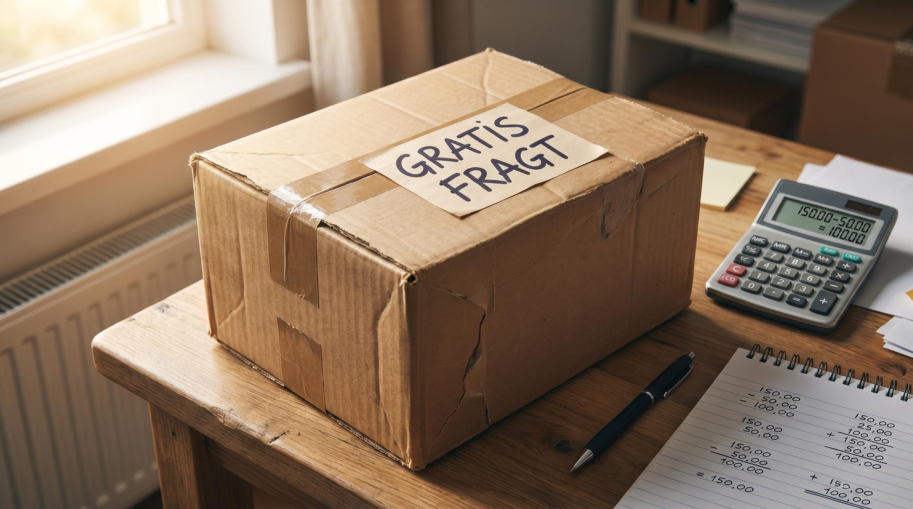

Fri fragt er et af de mest misforstaede vaerktoejer i dansk eCommerce. Mange webshops tilbyder det fordi konkurrenterne goer det, uden at have regnet paa om det faktisk er en fordel. Resultatet er en stille erosion af marginen, ordre for ordre, som kun opdages naer regnskabet ikke gaar op.
Fri fragt er ikke gratis. Den er blot skjult. Enten betaler du selv fragttaksten, eller ogsaa laegger du den ind i varens pris. Begge dele har konsekvenser. Og inden du beslutter dig, skal du kende det praecise regnestykke.
Denne artikel gennemgaar hvad fri fragt koster pr. ordre, hvordan du beregner breakeven-ordrevaerdien, og hvornaar du bor saette en minimumsgraense.
👉 SmartPack giver dig overblik over dine fulde forsendelsesomkostninger pr. ordre i realtid. Se hvordan
Hvad fri fragt egentlig koster dig
Naar en kunde bestiller noget og du tilbyder fri fragt, betaler du typisk fire ting som mange glemmer at laegge sammen:
- Fragttaksten til transportoren. Det er den synlige omkostning. En B2C-pakke til pakkeshop koster typisk 28-48 kr. afhangig af vaegt og fragtaftale. Hjemlevering koster 45-80 kr.
- Emballage. Kasse, tape, fyldmateriale og label. Typisk 8-22 kr. pr. ordre afhangig af varetypen.
- Haandteringstid paa lageret. Plukning, pakning og afsendelse. Laegg din lageromkostning pr. ordre til. For de fleste webshops i stoerrelsesordenerne 500-3.000 ordrer pr. maaned er det 25-55 kr.
- Returomkostning som stiger med volumen. Fri fragt tiltraekkker impulskob med hoejere returrate. Hver retur koster typisk 80-150 kr. at haandtere. Det er en skjult fragtomkostning du baerer.
Laeg det hele sammen og den reelle pris for en fri-fragt-ordre er ikke 35 kr. Det er naermere 80-120 kr. afhangig af din kategori og proceseffektivitet.
Breakeven-formlen: fra hvilken ordrevaerdi er fri fragt en gevinst
Her er den simple formel du skal bruge:
Breakeven-ordrevaerdi = samlet forsendelsesomkostning / bruttoavanceprocent
Et eksempel: din fragtomkostning inkl. emballage og haandtering er 75 kr. Din bruttoavance er 45%. Saa skal ordren vaere paa mindst 167 kr. foer fri fragt er neutral for din bundlinje. Er ordren under 167 kr., taber du penge paa fri fragt. Er ordren over, tjener du paa det.
Nu forstaar du ogsaa hvorfor de fleste succesfulde webshops saetter graensen for fri fragt noget over deres gennemsnitlige ordrevaerdi. Det er ikke tilfaeldigt. Det er for at traeffe en tilstrekkeelig stor andel af ordrerne paa den profitable side af linjen.
Eksempel med konkrete tal
| Scenario | Ordrevaerdi | Fragtkostnad | Resultat |
|---|---|---|---|
| Lille impulskob | 149 kr. | 75 kr. | Tab paa 8 kr. |
| Gennemsnitlig ordre | 299 kr. | 75 kr. | Gevinst paa 59 kr. |
| Stor ordre | 599 kr. | 75 kr. | Gevinst paa 194 kr. |
Avanceprocent: 45%. Breakeven: 167 kr. Ordrerne under den graense er tabers. Og hvis din gennemsnitskunde bestiller for 149 kr., er fri fragt et permanent tab.
Saaadan vaelger du den rigtige graense
Tricket er at saette fri-fragt-graensen noget over din nuvaerende gennemsnitlige ordrevaerdi. Ikke saa hoejt at ingen naer det, men hoejt nok til at de fleste tilfojer en ekstra vare for at slippe for fragten.
En tommelfingerregel: saet graensen til 125-150% af din gennemsnitlige ordrevaerdi. Hvis du i dag har en gennemsnitsordre paa 250 kr., proev en fri-fragt-graense paa 350-375 kr. Maael hvad der sker med din gennemsnitsordrevaerdi de naeste 30 dage. De fleste webshops ser en stigning paa 15-30%.
Kommuniker graensen tydeligt. En progressbar i kurven der viser "Tilfoej for XX kr. mere og faa fri fragt" er et af de mest effektive UX-elementer i eCommerce. Det oeger baade konvertering og ordrevaerdi paa samme tid.
Hvornaar er fri fragt paa alle ordrer den rigtige strategi
Der er scenarier hvor fri fragt paa alle ordrer giver mening. Det gaerder naer:
- Du saelger hojvaerdi-produkter hvor fragten er under 3% af ordrevaerdien. Fragten er saa lille relativt til marginen at det ikke er vard at forvirre kunden med et gebyr.
- Du konkurrerer direkte mod Amazon eller Zalando i en kategori hvor fri fragt er standard. Her er fragtkostnaden en del af prisen for at vaere i markedet.
- Du har priset varen op til at daekke fragten. Dette er den aerligneste model: kunden betaler altid for fragt, men det sker via produktprisen. Vaer opmaearksom paa at du stadig skal vaere pristrykket inden for din kategori.
Er ingen af disse scenarier dit tilefaelde, er en minimumsgraense for fri fragt naesten altid mere loemsnom end fri fragt paa alt.
De tre ting du skal maale efter en aendring
Naer du justerer din fragt-strategi, skal du overvage tre tal i de foelgende 30 dage: gennemsnitlig ordrevaerdi, konverteringsrate og returrate. En hojere ordrevaerdi og stabil konverteringsrate er et positivt tegn. Stiger din returrate, tiltraekker du maske det forkerte segment.
Husk: fri fragt paa lavvaerdi-ordrer tiltraekker impulskobere med hoej returrate. Det er en dobbelt omkostning. Du betaler for fragt ud, og du betaler for retur hjem.